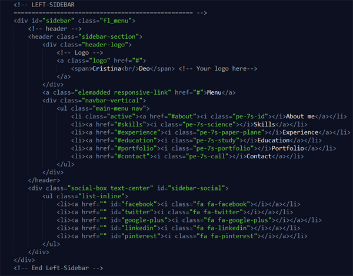
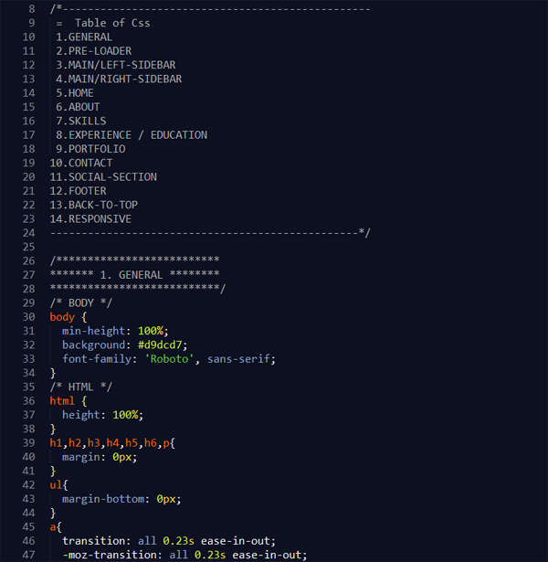
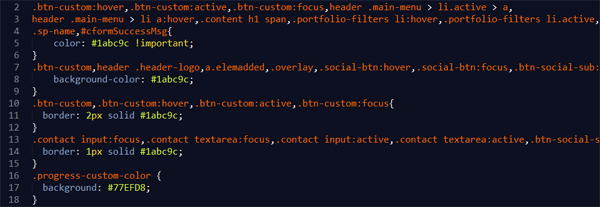
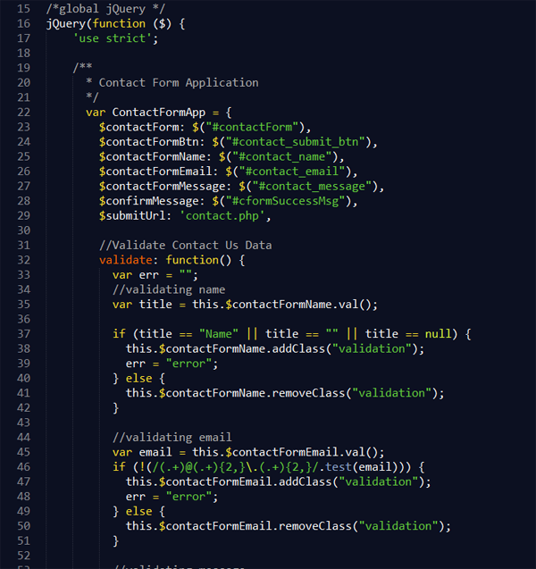

SWIFTLY :: Personal & Resume template |
|
Thank you for purchasing this theme!
Swiftly is a unique template designed for personal and professional use. It is a minimalist, responsve and elegant resume template for any kind of professionals to show their resume (education, work experience, skill set etc.) and portfolio in a some different way. Its completely responsive and comes with 8 different colors to choose from.
This template is a responsive layout. The general template structure is the same throughout the template.Also its comes with various color combination. You can choose your favorite color. Checkout all the stylesheet with color names in css folder. (i.e. green.css, red.css, etc)
This page is divided into three sections that house a navigation, header containing slider, and rest of part containing different content. This template uses the standard HTML5 markup.
The navigation can be found 'ul' element with class .nav class at top. You can easily add as many quick links to your navigation by adding a list item. Make sure that the link has a matching anchor in your document.
<li><a href="#new">New Link</a></li>
There is one main stylesheet file called 'style.css'. Also for each color the separate file is present in stylesheet folder.
This HTML document links to a CSS file called style.css inside the css folder. The CSS document is properly commented to help guide and inform the user of the different sections.
If you would like to change any color, you can add additional style file for that color e.g. green.css. You may also create a file containing your favorite color by copiying one of color file and change the color(hex) value in it. The structure is pretty simple. 
Lets take a look closely at our javascript files.
jQuery is a fast, small, and feature-rich JavaScript library. It makes things like HTML document traversal and manipulation, event handling, animation, and Ajax much simpler with an easy-to-use API that works across a multitude of browsers. With a combination of versatility and extensibility, jQuery has changed the way that millions of people write JavaScript.
scroll.js file contains combining javascript code for two library called BrowserSelector and smoothScroll for jQuery.
This is combined js of all third party library used in this theme. All of them are mentioned below. In future while customizing this theme, if you'll need to add any other lib, just add its js at the end of this file. You don't need to add it in html file.
It's a custom jquery module(OOP based). Its containing application specific logic. The code in this file is completely modular. The main application is defined with App class. While for contact form and floating menu 'ContactFormApp' and 'FloatingMenuApp' are defined separately. It allows you to understand and change it easily. All the events are binded in a nice way.
Thank you again for your purchase and feel free to contact myself with any questions regarding this template/theme.
Creator - Harry